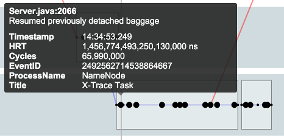
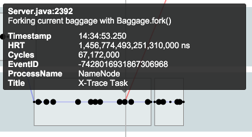
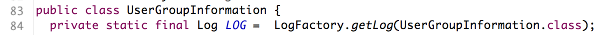
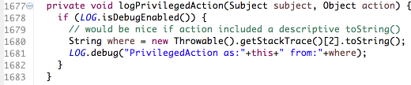
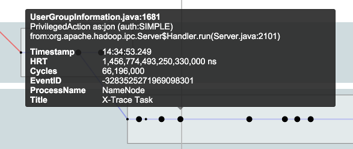

X-Trace - Automatic Instrumentation Tools
This project provides some AspectJ aspects that enhance X-Trace in the following ways:
Report Decoration
Calls to XTraceLogger.log() will be overridden to additionally pass the AspectJ thisJoinPointStaticPart object. This enables X-Trace to add additional information to reports such as the source file and line number.
Baggage API Logging
Calls to the static Baggage API will be wrapped so that X-Trace logging calls are also generated. This is useful for observing the boundaries of execution and, combined with report decoration, where in the source code this is happening.
All reports are generated using the edu.brown.cs.systems.xtrace.logging.BaggageWrappers logging agent, which can be disabled as with any other agent.
The following shows an example of some of the reports generated:
 
Commons and log4j Logging
X-Trace can proxy all calls to log4j/commons loggers and generate X-Trace reports at the same time. For example, the following code, when instrumented, will also produce an X-Trace report:



X-Trace will override calls to org.apache.commons.logging.LogFactory.getLog() and org.slf4j.LoggerFactory.getLogger() and wrap the returned loggers in custom wrapped classes. The wrapped classes proxy all calls to the original underlying logger. In addition, they generate X-Trace reports using the provided logging class.
The wrapped loggers that X-Trace returns have slightly modified logic for their isEnabled() methods. Now, a logger is enabled if the underlying log4j/commons logger is enabled, OR if the underlying X-Trace logger is valid (eg, it has a task ID and the logging class is enabled).
The config value xtrace.client.reporting.default_level can be set to debug, info, trace, warn, error, or fatal, to tell X-Trace the minimum logging level for generating X-Trace reports from proxied log4j/commons logging calls. Furthermore, this value can be overridden on a per-task basis. The static call XTrace.setLoggingLevel() can set the desired logging level for an individual request.
The following example starts an X-Trace task, and sets its logging level to debug:
XTrace.startTask(true);
XTrace.setLoggingLevel(XTraceLoggingLevel.DEBUG);The request will generate X-Trace reports for all debug-level logging statements and greater -- very verbose.
Main method tracing
X-Trace will instrument all main methods to start an X-Trace task. Set xtrace.client.tracemain to false to disable this behavior. Set xtrace.client.tracemain_level to the desired logging level for the log4j/commons logging messages. The specific code that is added to main method is as follows:
if (XTraceSettings.traceMainMethods()) {
XTrace.startTask(true);
XTrace.setLoggingLevel(XTraceSettings.mainMethodLoggingLevel());
XTrace.getLogger(XTraceInit.class).tag(thisJoinPointStaticPart, "Process main method begin", Utils.getMainClass().getSimpleName(), "main");
}Configuration
X-Trace Automatic Instrumentation Tools support the following default config values:
xtrace {
client {
reporting {
default_level = "warn" # log4j / apache commons loggers will proxy 'warn' messages or higher to xtrace
}
tracemain = true # If enabled, the XTraceInit aspect will start an X-Trace task from any main methods
tracemain_level = "warn" # If enabled, the XTraceInit aspect will set the log4j / apache commons logging level to 'warn' or higher
}
}